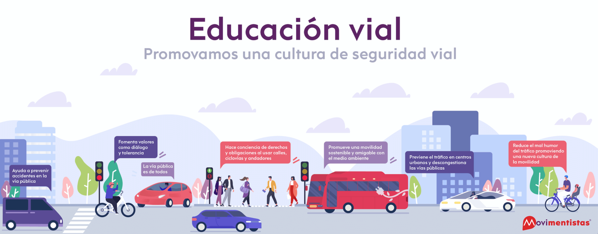

Es la manera en la que las personas se relacionan en las vías, es decir, la interacción de sus pensamientos, sentimientos y acciones cuando transitan en calles o aceras, como conductores o peatones. Cada sociedad tiene una cultura vial particular, la diferencia de cómo se transita en cada país depende principalmente del desarrollo de la cultura de sus ciudadanos, donde lo básico es que exista cierta estabilidad y control al momento de desplazarse por los espacios de movilización. Un factor determinante en la cultura vial de cada comunidad, es que existan leyes y normas que la ciudadanía conozca, comprenda y respete. Una vía para la ejecución de este factor determinante, es la educación vial, la cual se refiere la adquisición de conocimientos, hábitos y actitudes, en relación con las reglas, normas y señales que regulan la circulación de vehículos y personas que transitan por la vía pública
